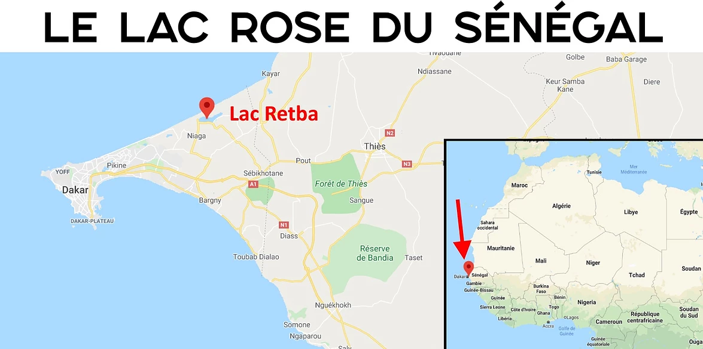
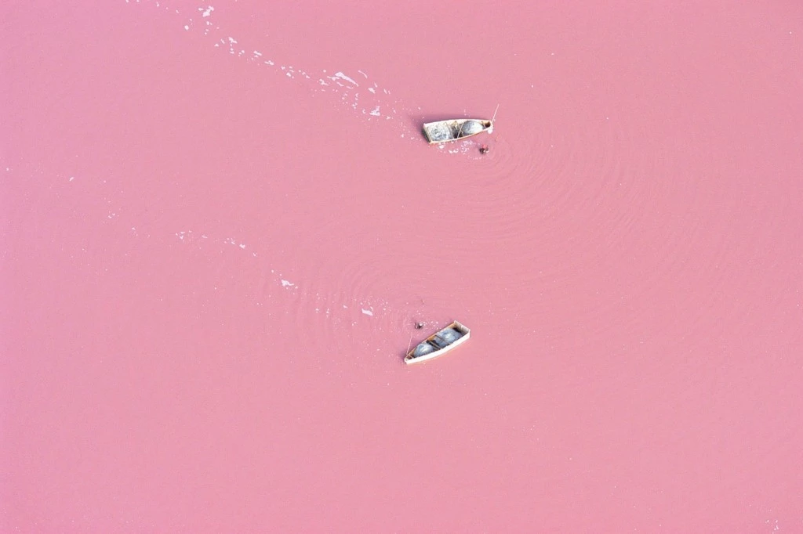
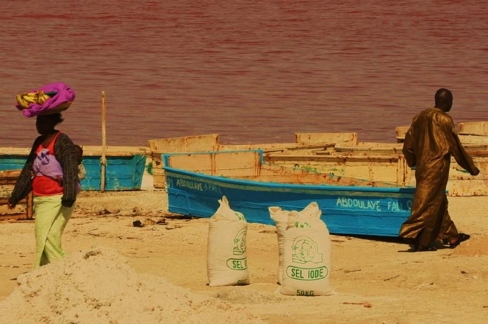

Le Lac Retba, souvent appelé le Lac Rose pour sa couleur si particulière, est l'un des sites les plus visités de la presqu'île du Cap Vert au Sénégal.
Il possède des nuances allant du rose fuchsia au rouge pourpre selon la luminosité. C'est le deuxième lac le plus salé du monde après la Mer Morte, c'est pour cela qu'on y flotte quand on s'y baigne.

COORDONNEES GPS
Le Lac Rose du Sénégal est situé à quelques centaines de mètres de l’océan Atlantique, à 35 km au nord-est de Dakar. Ci-dessous la carte qui vous permet de le localiser.

LA COULEUR DU LAC RETBA : ROSE OU ROUGE ?
Sa couleur rose si particulière est due à la présence d'un micro organisme qui développe un pigment rouge pour résister à la concentration de sel.

L'ACTIVITE SALINE DU LAC ROSE DU SENEGAL
La récolte du sel est travaillée quotidiennement, on peut y extraire 80 à 300 grammes de sel par litre d'eau, ce qui est particulièrement dense !